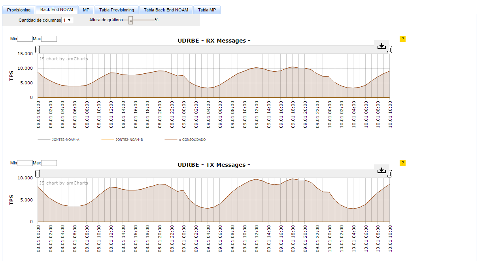
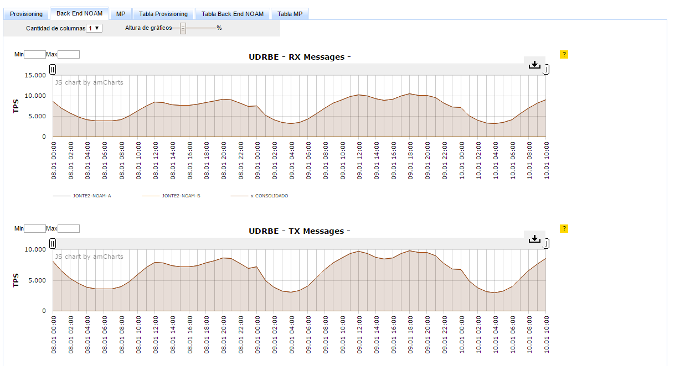
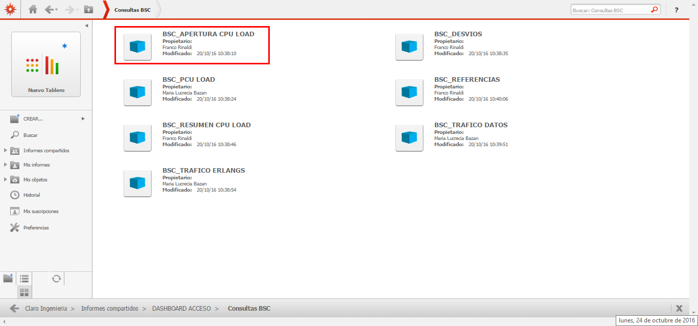
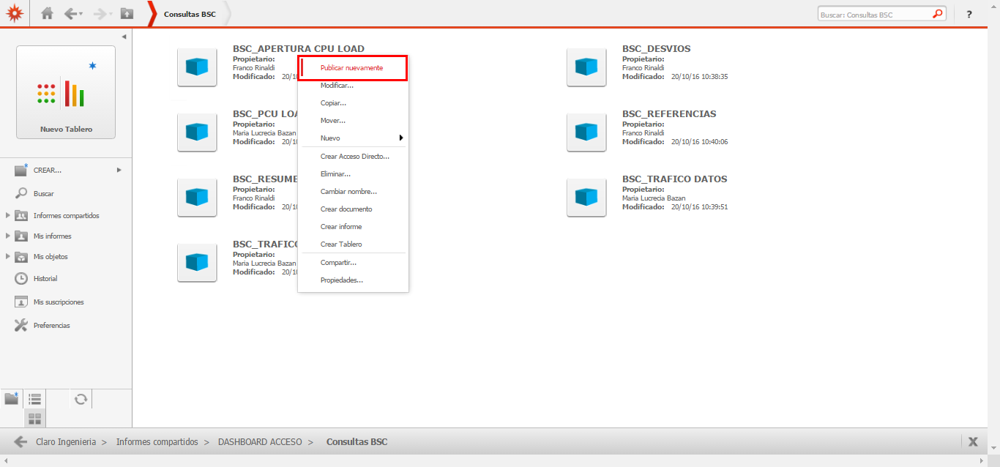

CISCO EPDG y SAMOG¶
1. OBJETIVO¶
El presente documento buscar explicar y detallar el proceso que genera Cisco EPDG y SAMOG
2. ALCANCE¶
Áreas involucradas: Performance de Red
3. DEFINICIONES¶
- Cortado: Servidor UNIX en donde se importan los XML desde el proveedor, y en donde se encuentra Smart. El nombre es cortado.claro.amx y la dirección ip física es 10.105.146.8.
4. DESCRIPCION GENERAL¶
Documento de Requerimiento: Medición_Plataforma_EPDG_SAMOG
5. MACROFLUJO¶

6. DESCRIPCIÓN DETALLADA¶
6.1. Datos Origen¶
- Server Origen y Path: perdido.claro.amx (preguntar - Servidor de los datos de la tabla Raw)
- Frecuencia actualización: Frecuencia hour
- Tipo de Archivo: .txt
6.2. Datos Destino¶
- Server Destino: Falda
- Conversión de Archivos: No
- Tabla Files: No
- Tabla Auxiliar: No
- Frecuencia de corrida del proceso: -
- Regionales: No
- RAW Si/No: Si
- Hour Si/No: Si
- Day Si/No: Si
- BH Si/No: Si
- ISABHW Si/No: Si
- Países: No
- Directorio Destino (File System): -(en base de datos)
6.3. Tablas Utilizadas¶
FUENTE DE DATOS: CISCO_FILES_GGSN_raw
- CISCO_GGSN_EPDG_SCH1_RAW_VW@SMART.WORLD_T1
- CISCO_GGSN_EPDG_SCH3_RAW_VW@SMART.WORLD_T2
- CISCO_GGSN_EPDG_SCH4_RAW_VW@SMART.WORLD_T3
- CISCO_GGSN_EPDG_SCH7_RAW_VW@SMART.WORLD_T4
- CISCO_GGSN_SAMOG_SCH1_RAW_VW@SMART.WORLD_T1
- CISCO_GGSN_SAMOG_SCH3_RAW_VW@SMART.WORLD_T2
Las 6 vistas son traídas de la tabla Raw, declaradas en el servidor Perdido
Tablas utilizadas:
- CISCO_GGSN_SAMOG_HOUR
- CISCO_GGSN_EPDG_HOUR

- CISCO_GGSN_SAMOG_DAY

- CISCO_GGSN_EPDG_DAY
- CISCO_GGSN_SAMOG_BH


- CISCO_GGSN_EPDG_BH


- CISCO_GGSN_SAMOG_ISABHW

- CISCO_GGSN_EPDG_ISABHW
 

7. REPROCESO¶
PENDIENTE
8. SMART¶
En la herramienta Smart se muestra la información de la siguiente manera:
 9. CONTROL DE CAMBIOS¶
| Fecha | Responsable | Ticket Jira | Detalle | Repositorio |
|---|---|---|---|---|